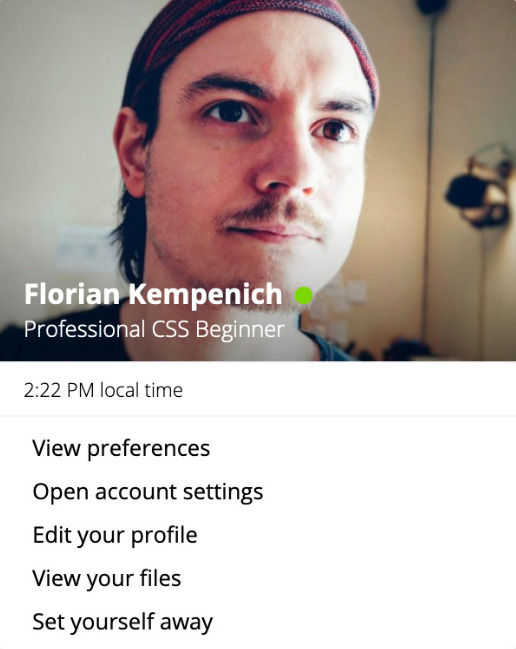
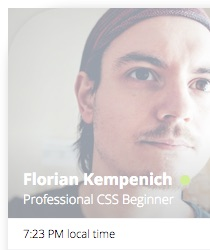
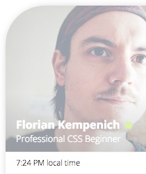

Background Image With Rounded Corners
1 min read - August 7nd, 2019
Recently I have been dedicating some time to the study of the fundamentals of HTML and CSS. A couple of days ago I wrote a blog post on my very first Front-End Kata.
The result is this Slack-like card:

The link to the CodePen: Slack Card
I decided to write a couple of follow up articles to share a few things I learned through this experience. It isn’t mean to teach the basics of CSS, just meant to share 2 or 3 interesting pieces of info I remembered the most 🙂. Today is the first one of the series.
Background Image With Rounded Corners
The HTML code for the Slack card looks like this:
<div class="slack-card">
<div class="header-with-img">
...Picture and Name...
</div>
<div class="time-and-date">
...
</div>
<ul class="profile-actions">
...
</ul>
</div>
The Profile Picture is a background-image set in .header-with-img, but the rounded corners were set on the parent .slack-card with border-radius. What would happen is that while the .slack-card would be rounded as expected, it wouldn’t clip the background image of .header-with-img and the image would be visible outside the boundaries of .slack-card.
Here is a picture presenting the problem, I added transparency and exaggerated the border-radius to highlight the issue:

What’s the fix? Well, another way of describing the problem would be to say the .header-with-img was overflowing from the .slack-card container. The fix to allow clipping was simply to add overflow: hidden to .slack-card:
.slack-card {
...
overflow: hidden;
...
}
And here is the result 😃

I could see at least 2 other possibilities for solving this problem:
- Setting the same
border-radiuson the.header-with-img - Removing
border-radiusfrom.slack-cardaltogether, and dealing with the corner rounding in.header-with-imgfor 2 top corners andprofile-actionsfor the 2 bottom ones.
That being said, I wasn’t a fan of the first alternative because of the redundancy it induces, and I wasn’t a fan of the second one because I wasn’t sure how the shadow would behave.
Either way, if you have arguments for one or the other of the alternative solutions, or maybe even a third idea, be sure to let me know in the comments or @ThisIsFlorianK on Twitter ;)
Until next time — The Professional Beginner